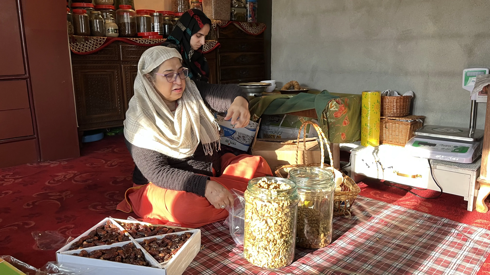
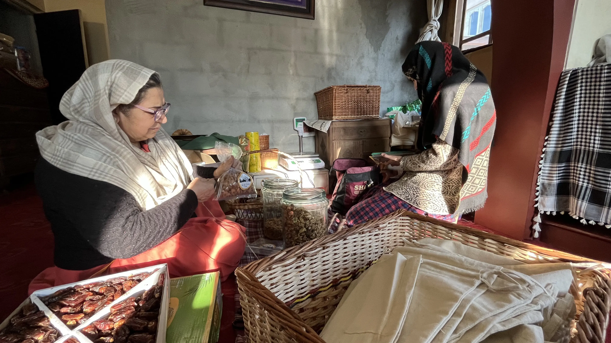
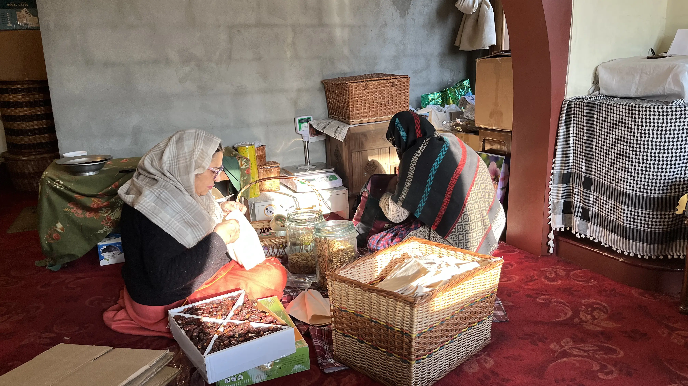
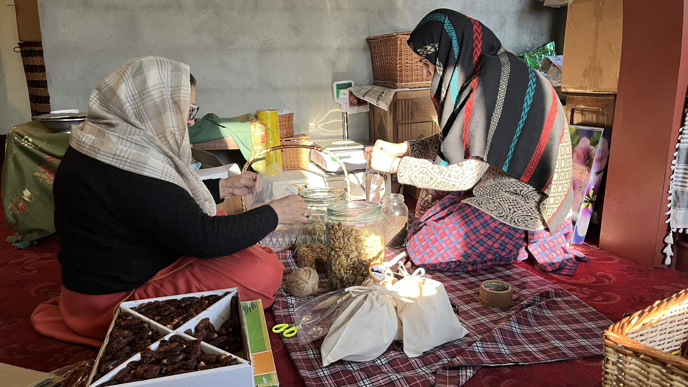
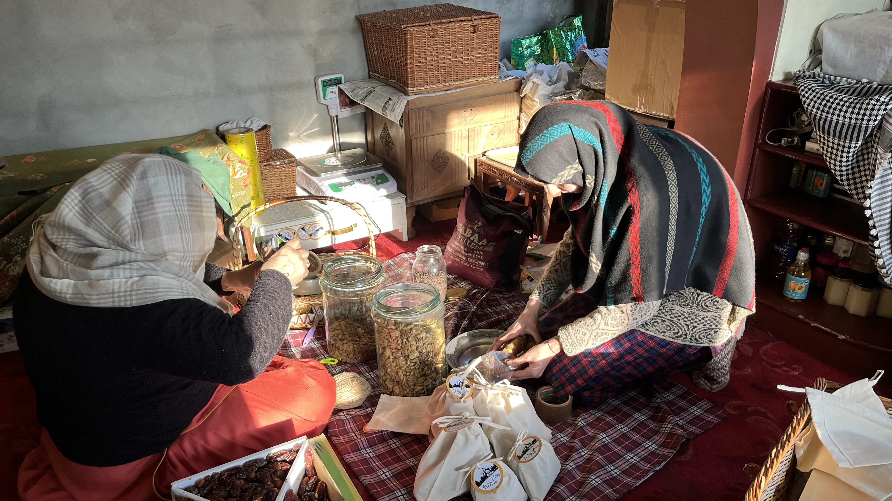

<section class="about-section">
  <div class="container">
    <div class="row align-items-center g-4">

      <!-- IMAGE SLIDER -->
      <div class="col-lg-6 order-lg-2">
        <div class="image-slider">
          <div class="slider-track">

            <!-- ORIGINAL -->
            
            
            
            
            

            <!-- DUPLICATE (IMPORTANT for infinite scroll) -->
            
            
            
            
            

          </div>
        </div>
      </div>

      <!-- CONTENT -->
      <div class="col-lg-6 order-lg-1">
        <div class="content">
          <span class="tag">About Wild Valley Foods</span>
          <h2>Wild Valley Foods</h2>

          <p class="about-text">
            Wild Valley Foods finds its roots in the serene valleys of Kashmir, where it began as a humble initiative in a small room. It was founded by Anisa Bilal, a retired Urdu teacher, who set out on this entrepreneurial journey at the remarkable age of 65.
          </p>

          <p class="about-text">
            Through unwavering hard work and a sharp commitment to quality, Anisa has made the premium farm produce of Kashmir accessible to customers across the globe. From dry fruits and saffron to grains, pulses, seeds, and herbs, every product reflects authenticity and care. By building a direct network with farmers across the valley, she has created a sustainable ecosystem that ensures purity, fair value, and a meaningful connection between the source and the consumer.
          </p>

          <div class="btn-box">
            <a routerLink="/contact-us" class="btn-style-one">Contact Us</a>
          </div>
        </div>
      </div>

    </div>

    <!-- FUTURE GOAL -->
    <div class="future">
      <span class="tag">Our Vision</span>
      <h3>Taking Kashmir’s Taste Global</h3>

      <p>
        Our goal is to make authentic Kashmiri products accessible worldwide while preserving heritage, quality, and trust.
      </p>
    </div>

  </div>
</section>